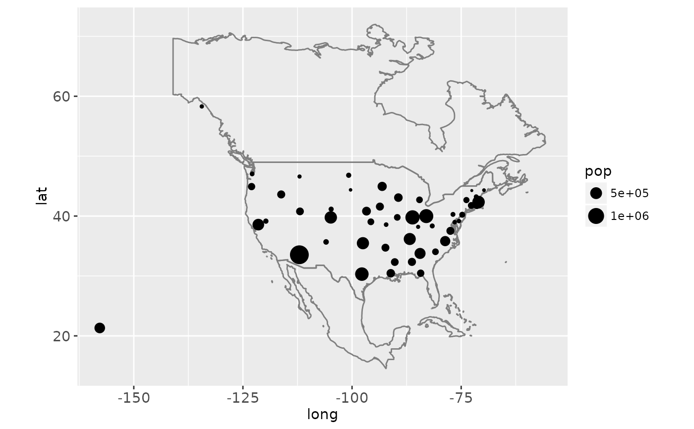

Create a layer of map borders.
Usage
borders(
database = "world",
regions = ".",
fill = NA,
colour = "grey50",
xlim = NULL,
ylim = NULL,
...
)Arguments
- database
map data, see
mapfor details- regions
map region
- fill
fill colour
- colour
border colour
- xlim, ylim
latitudinal and logitudinal range for extracting map polygons, see
mapfor details.- ...
other arguments passed onto
geom_polygon
Examples
if (require("maps")) {
ia <- map_data("county", "iowa")
mid_range <- function(x) mean(range(x))
seats <- plyr::ddply(ia, "subregion", plyr::colwise(mid_range, c("lat", "long")))
ggplot(ia, aes(long, lat)) +
geom_polygon(aes(group = group), fill = NA, colour = "grey60") +
geom_text(aes(label = subregion), data = seats, size = 2, angle = 45)
data(us.cities)
capitals <- subset(us.cities, capital == 2)
ggplot(capitals, aes(long, lat)) +
borders("state") +
geom_point(aes(size = pop)) +
scale_size_area() +
coord_quickmap()
# Same map, with some world context
ggplot(capitals, aes(long, lat)) +
borders("world", xlim = c(-130, -60), ylim = c(20, 50)) +
geom_point(aes(size = pop)) +
scale_size_area() +
coord_quickmap()
}
